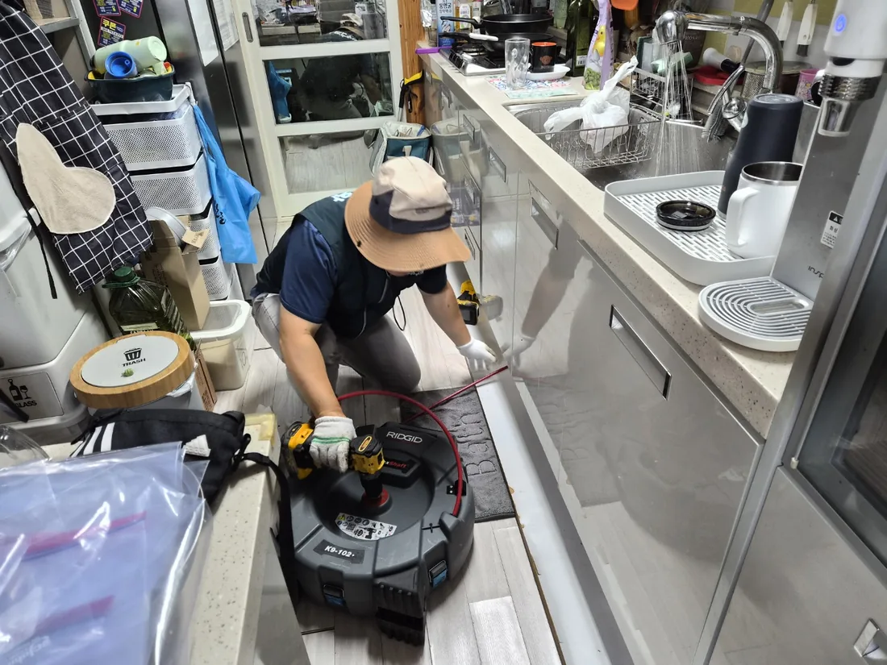
싱크대 막힘
이런 증상이면 연락 주세요
- 설거지할 때 물이 천천히 빠지고 고여요
- 거름망을 비워도 그대로예요
- 싱크대에서 하수구 냄새가 올라와요
싱크대 부속·노즐부터 배관 안쪽까지 확인하고 뚫습니다.
80,000원~배관 막힘은 별도
싱크대 막힘 전화 상담뚫었는데 또 막혔나요? 실패하고 돌아간 업체가 있었다면, 저희가 해결해 드리겠습니다.
작업 중이라 통화가 어려우면 문자로 사진을 보내주세요. 확인하는 대로 바로 연락드립니다.
뚫리는 순간
실제 작업 현장에서 찍은 영상입니다 · 소리 없음 · 자동으로 넘어가며 손으로도 넘길 수 있습니다
막힌 곳
막힌 곳을 누르면 증상·작업 방법·시작 비용을 바로 볼 수 있습니다.

이런 증상이면 연락 주세요
싱크대 부속·노즐부터 배관 안쪽까지 확인하고 뚫습니다.
80,000원~배관 막힘은 별도
싱크대 막힘 전화 상담이런 증상이면 연락 주세요
배수구 안쪽 배관까지 확인해서 막힌 것을 빼냅니다.
80,000원~욕조·바닥 배관 막힘은 별도
욕실·바닥 하수구 막힘 전화 상담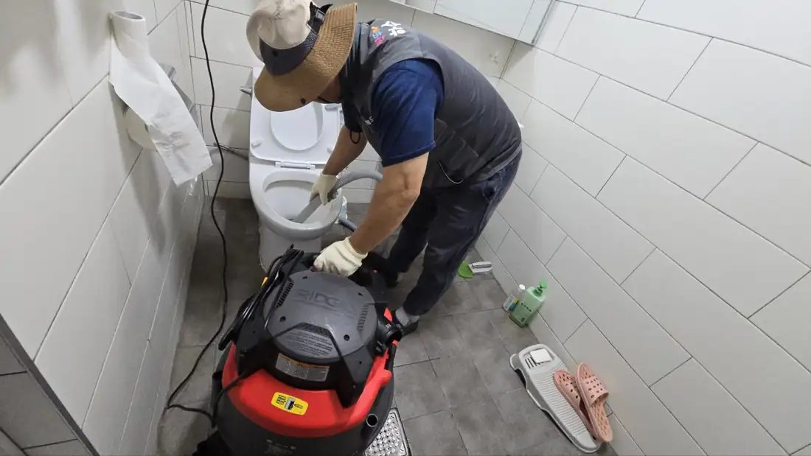
이런 증상이면 연락 주세요
필요하면 변기를 떼어내고 배관까지 뚫습니다.
50,000원~
변기 막힘 전화 상담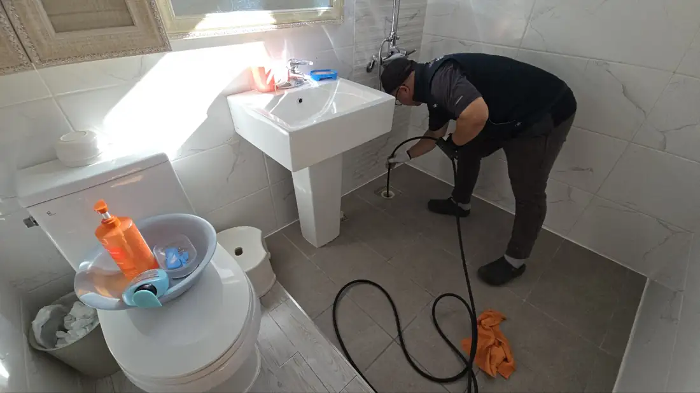
이런 증상이면 연락 주세요
폽업과 배관을 확인하고 막힌 곳을 뚫습니다.
50,000원~폽업 교체 시 별도
세면대 막힘 전화 상담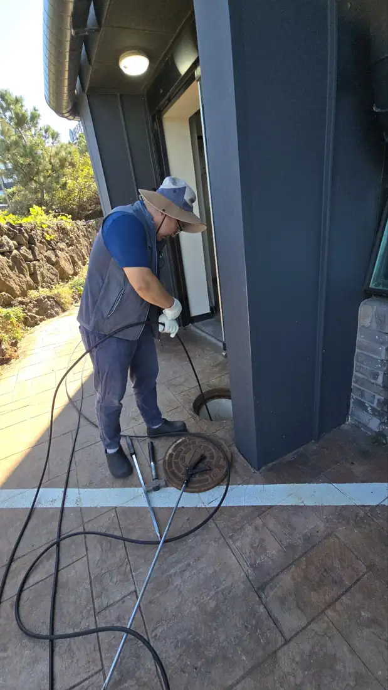
이런 증상이면 연락 주세요
내시경으로 막힌 위치를 찾고, 필요하면 고압세척으로 씻어냅니다.
50,000원~내시경 무료 · 고압세척 500,000원~
하수구·메인 배관 막힘 전화 상담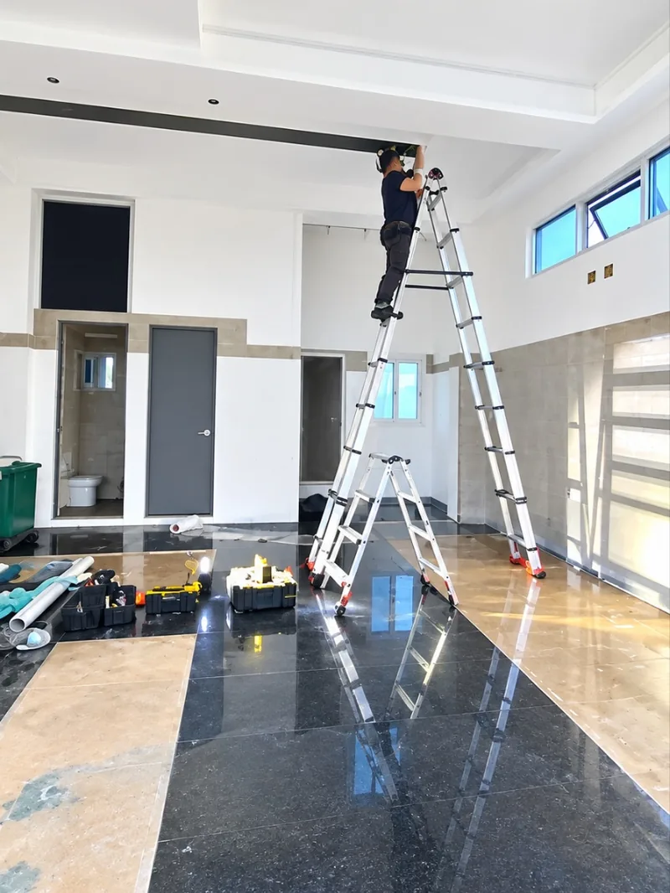
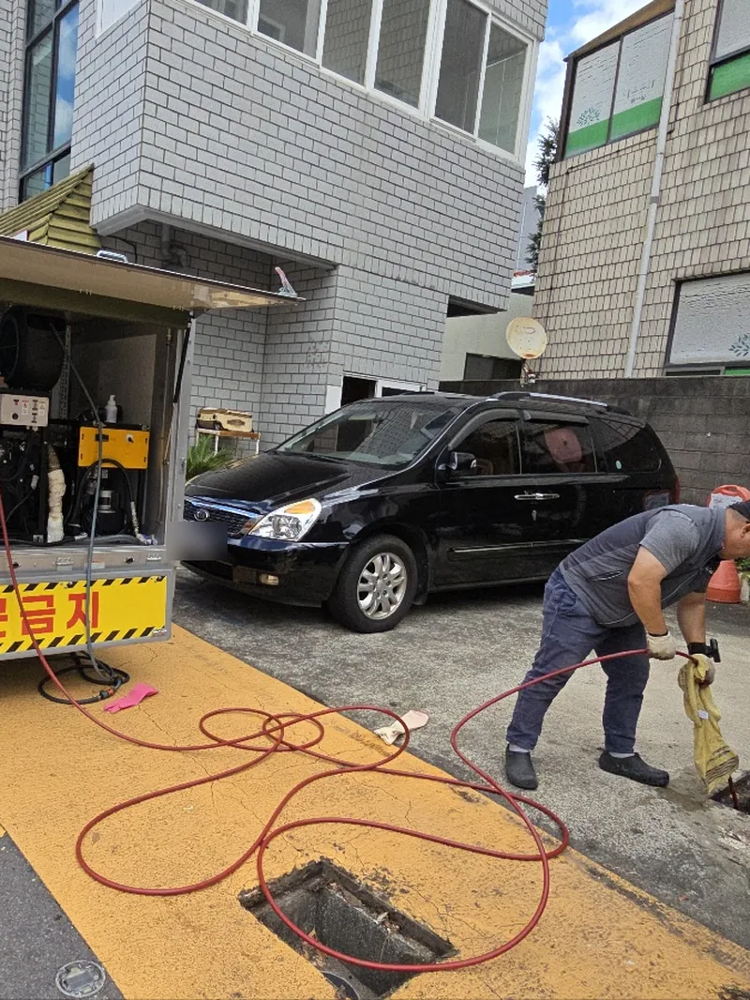
이런 증상이면 연락 주세요
현장을 먼저 보고 작업 범위와 비용을 안내드립니다.
현장 확인 후 안내
상가·식당·공장 배관 전화 상담비용 안내
책임 시공 원칙
광고만 하고 하청을 주는 업체가 아닌, 대표가 직접 현장을 확인하고 시공하는 책임 시공을 원칙으로 합니다.
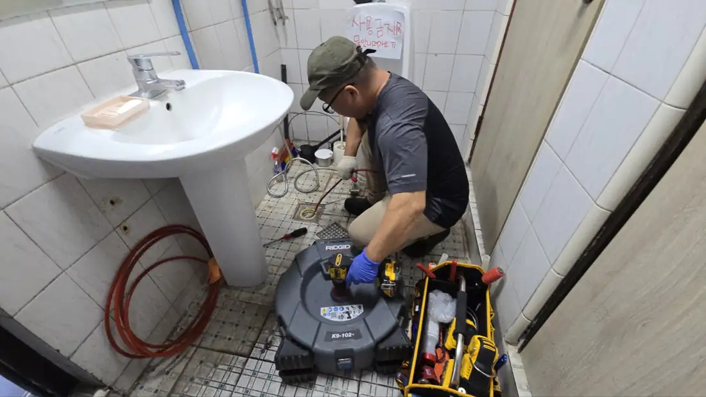
작업 사진
진행 순서
막힌 곳 사진을 문자로 보내주시면 더 빨리 안내드립니다. 24시간 받습니다.
하청 없이 대표가 직접 가서 막힌 곳과 배관 상태를 봅니다. 출장비·점검은 무료입니다.
필요하면 내시경(무료)으로 원인을 확인하고, 작업 전에 비용을 먼저 말씀드립니다.
작업 후 물을 흘려 내려가는 것까지 확인하고 마무리합니다. 못 뚫으면 0원입니다.
실제 장비
배관 내시경 카메라 · 고압 세척기 · 전동 관통기 · 배관 탐지기까지, 최신 배관 장비를 보유하고 있습니다.
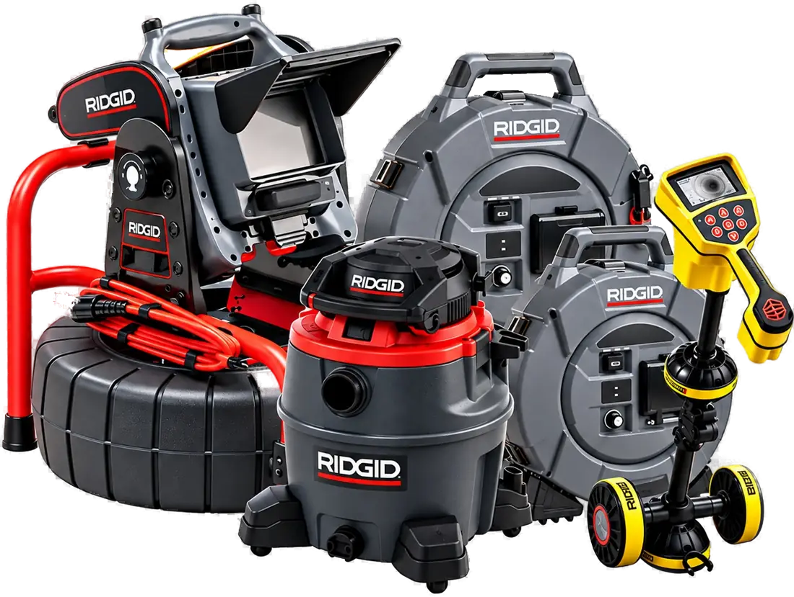
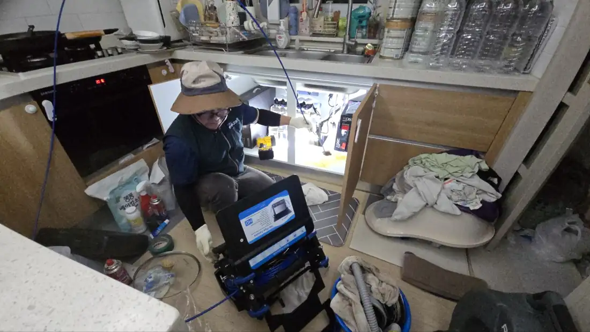
배관 속을 화면으로 보고 막힌 위치와 원인을 찾습니다.
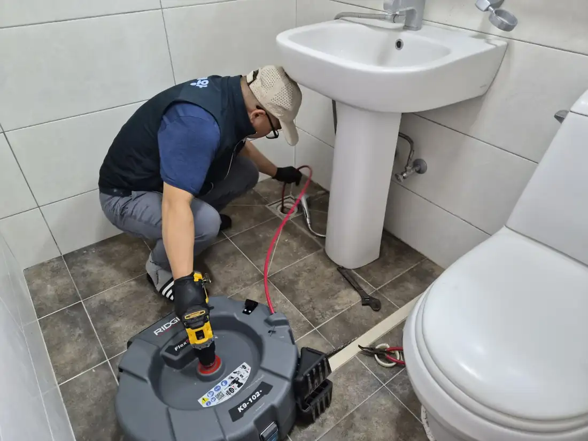
전동 스케일링 장비로 배관 안쪽에 붙은 기름때·찌꺼기를 긁어내고 막힌 곳을 뚫습니다.
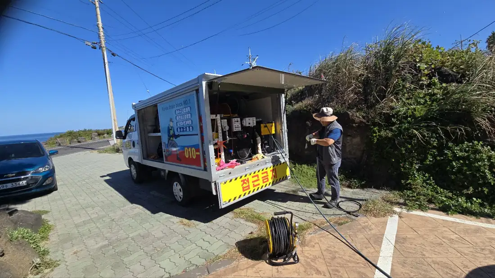
센 물살로 배관 벽의 기름때·슬러지를 씻어냅니다.
장비를 싣고 제주 전 지역 현장으로 바로 갑니다.
고객 후기
직접 맡겨 주신 분들의 이야기입니다. 자동으로 넘어가며 손으로도 넘길 수 있습니다.
자주 묻는 질문
출동 지역 · 시간
제주도 어디든 갑니다. 읍·면 지역도 출장비 없이 24시간 출동합니다.
방문 예약
남겨 주시면 확인 후 바로 전화드립니다. 급하시면 지금 전화 주세요.